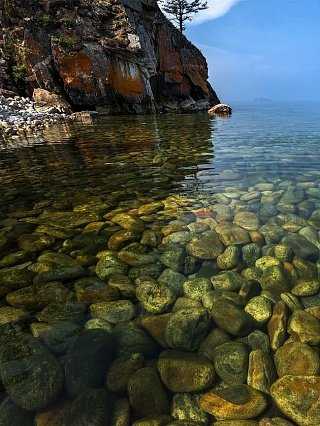
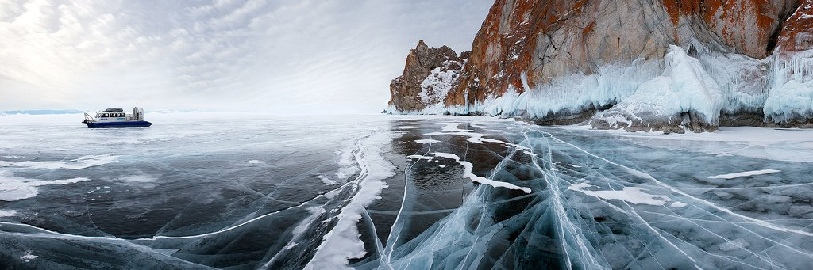
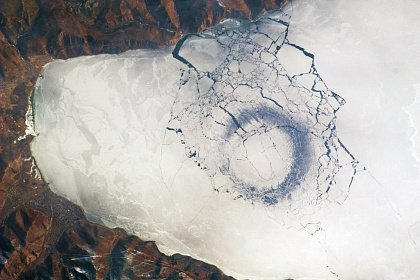
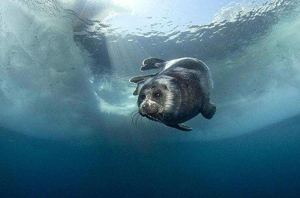

Озеро Байкал, расположенное на юге Восточной Сибири, на границе Иркутской области и Республики Бурятия, относится к числу самых древних водоемов нашей планеты. Но больше всего оно известно тем, что является самым глубоким озером на Земле и одновременно крупнейшим естественным резервуаром пресной воды – 19% всех мировых запасов. И сам Байкал, и прибрежные территории отличает неповторимая в своем разнообразии флора и фауна, что делает эти места поистине уникальными, неизменно привлекающими к себе внимание научных умов и многочисленных любителей путешествий и настоящих искателей приключений.
Озеро Байкал – какое оно?
По очертаниям Байкал похож на узкий полумесяц, настолько легко запоминающийся, что его без труда находят на карте России даже те, кто не особенно силен в географии. Простершийся с юго-запада на северо-восток на целых 636 километров, Байкал словно протискивается между горными массивами, а его водная гладь находится на высоте более 450 метров над уровнем моря, что дает все основания считать его горным озером. С запада к нему примыкают Байкальский и Приморский хребты, с востока и юго-востока – массивы Улан-Бургасы, Хамар-Дабан и Баргузинский. И весь этот природный ландшафт настолько гармоничен, что одно без другого трудно представить.
Глубина озера
Глубина озера поистине впечатляюща – 1637 метров. По этому показателю Байкал превосходит такие крупнейшие водоемы, как Танганьика (1470 м), Каспийское море (1025 м), Сан-Мартин (836 м), Ньяса (706 м), Иссык-Куль (702 м) и Большое Невольничье озеро (614 м). Остальные глубочайшие озера мира, всего их двадцать два, имеют глубину менее 600 метров. А климатические условия на Байкале, что называется, под стать его уникальным особенностям: здесь то нещадно палит солнце и дуют холодные ветры, то свирепствуют штормы и устанавливается тишайшая погода, благоприятствующая пляжному отдыху.
Вода Байкала
23 615, 39 км³ – такой фантастической цифрой измеряются запасы байкальской воды. По этому показателю озеро уступает лишь Каспийскому морю. Учитывая же, что в последнем она соленая, именно Байкал занимает первую строчку мирового рейтинга по запасам пресной, то есть пригодной для питья воды. К тому же она отличается чрезвычайной прозрачностью, и всё благодаря очень небольшому количеству взвешенных и растворенных минеральных веществ, не говоря уже об органических примесях – их тут вообще ничтожно мало. На глубине до 35-40 метров можно даже различить отдельные камни, особенно весной, когда вода становится синего цвета. Отличается она и огромными запасами кислорода. Не зря Байкал – за совокупность столь уникальных свойств и качеств – называют национальным достоянием России. Вода в Байкале очень чистая. Раньше ее можно было пить прямо из озера и даже не кипятить. Но сейчас к Байкалу устремились толпы туристов, которые все-таки загрязняют эту местность, поэтому теперь, прежде чем выпить байкальской воды, следует спросить у местных жителей, в каком месте это можно сделать.
Лёд Байкала
Время ледостава на озере длится в среднем с начала января по начало мая. В этот период оно замерзает практически полностью. Исключение составляет лишь небольшой 15-20-километровый участок, расположенный в истоке Ангары. На исходе зимы толщина льда может достигать 1 метра, а в заливах и того больше – полтора-два метра. При сильных морозах на льду образуются огромные трещины, которые тут прозвали «становыми щелями». Они настолько внушительны, что в длину могут достигать от 10 до 30 км. Ширина, правда, мала: всего 2-3 м. Такие «щели» буквально разрывают ледяное покрывало на отдельные поля. Если бы не трещины, образование которых сопровождается громким, словно пушечный выстрел, звуком, то озерная рыба массово бы погибала от недостатка кислорода. Лед Байкала имеет и ряд других особенностей, присущих только ему, и поистине загадочных, которые ученые так и не смогли объяснить. Еще в середине прошлого века специалистами местной лимнологической станции обнаружены так называемые «сопки» – полые ледяные холмы в форме конуса, достигающие высоты 5-6 метров. Будучи «открытыми» в сторону, противоположную берегу, они даже чем-то напоминают шатры. Иногда встречаются «сопки-одиночки», то есть располагающиеся отдельно друг от друга. В ряде случаев они группируются, образуя «горные хребты» в миниатюре.
Темные кольца на озере
Еще одна загадка – темные кольца, диаметр которых 5-7 км (причем ширина самого озера составляет 80 км). С «поясом Сатурна» они не имеют ничего общего, хотя их тоже обнаружили посредством космических съемок. Спутниковые фотографии удивительных образований, сделанные еще в 2009 году на разных участках Байкала, обошли весь Интернет. Ученые долго ломали голову: что же это может быть? И пришли к мнению, что кольца возникают вследствие поднятия глубинных вод и повышения температуры верхнего слоя в центре кольцевой структуры. И как следствие возникает течение по часовой стрелке, достигающее в отдельных зонах максимальных скоростей. В результате этого вертикальный водообмен усиливается, провоцируя разрушение ледяного покрова в ускоренном режиме.
Растительный и животный мир
Интересный факт: чистота байкальской воды – кстати, весьма холодной (температура поверхностных слоев даже в теплое время года не превышает в среднем +8-9° С) – поддерживается микроскопическим рачком эпишурой, одним из наиболее известных местных эндемиков. В процессе своей жизнедеятельности это 1,5-миллиметровое ракообразное потребляет органику (водоросли), пропуская через свой маленький организм воду. Роль эпишуры в экосистеме озера трудно переоценить: она формирует 90 и более процентов его биомассы, служа в свою очередь питанием для байкальского омуля и хищных беспозвоночных. В процессах самоочищения Байкала заметную роль играют также олигохеты или малощетинковые черви, 84,5 процента которых – эндемики. Из 2600 видов и подвидов местной фауны эндемиками, то есть обитающими исключительно в этом озере, является более половины водных животных. Из рыб также можно выделить хариуса, байкальского осётра, сига, тайменя, щуку, налима и других. Особенный интерес вызывает голомянка, которая с человеческой точки зрения «страдает» ожирением: её организм содержит порядка 30% жира. Она настолько любит поесть, что в поисках корма каждый день совершает «путешествие» из глубин на мелководье, чем немало удивляет исследователей. Этот подводный житель уникален и тем, что относится к живородящим рыбам. Дальними «соседями» голомянок можно назвать пресноводных губок, произрастающих на большой глубине. Их наличие здесь – явление эксклюзивное: ни в одном другом озере они не встречаются. Если биосферу озера представить в виде пирамиды, то венчать ее будет байкальская нерпа или тюлень, являющийся единственным млекопитающим в этом водоеме. Практически всё время он обитает в воде. Исключение составляет лишь осень, когда нерпа массово залегает на каменистых берегах, образуя своего рода «поселения». Побережье и острова осваивает и немало других обитателей Байкала, – например, чайки, гоголи, огари, крохали, орланы-белохвосты и другие птицы. Характерно для этих мест и такое явление, как выход на берега, причем в массовом порядке, бурых медведей. А в горной прибайкальской тайге можно встретить кабаргу – самого маленького оленя на Земле.
Интересные факты
Территория, на которой расположено озеро (Байкальская рифтовая зона), отмечается высокой сейсмологической активностью. Здесь регулярно происходят землетрясения, правда в большинстве случаев мощность толчков не превышает 2 баллов. Однако известны случаи самых настоящих стихийных бедствий. Самым масштабным считается Цаганское землетрясение, произошедшее в 1862 году, когда толчки достигали 10 баллов, а под воду буквально смыло целых 200 «квадратов» суши вместе с жителями. За последние 100 лет в районе Байкала было зафиксировано 6 землетрясений, средняя мощность которых колебалась в пределах 9 баллов.
Все привыкли, что вода в наших морях и озерах, прямо скажем, не самая прозрачная. Но Байкал это совершенно не касается. Здесь вы можете глядеть сквозь водную гладь, словно ее и нет вовсе. Действительно, на некоторых участках весной видимость достигает 40 метров. Представляете, вы видите дно или камни подобно тому, как видите асфальт с крыши 12-этажного дома. Настоящая фантастика! Впрочем, так бывает только в первые несколько недель после ледостава. Летом и осенью, по мере зарождения в теплой (относительно конечно) байкальской воде множества живых организмов, видимость начинает снижаться и останавливается на отметке в 8 метров, что в общем-то тоже очень неплохо.
Озеро Байкал — это новый и зарождающийся океан.Конечно, это не совсем факт, а скорее научная гипотеза. Но в это время все наблюдаемые факты, включая движение земных плит (озеро Байкал находится на краю титановой сибирской платформы), которые приводят к расширению границ озера Байкал, подразумевают именно это.